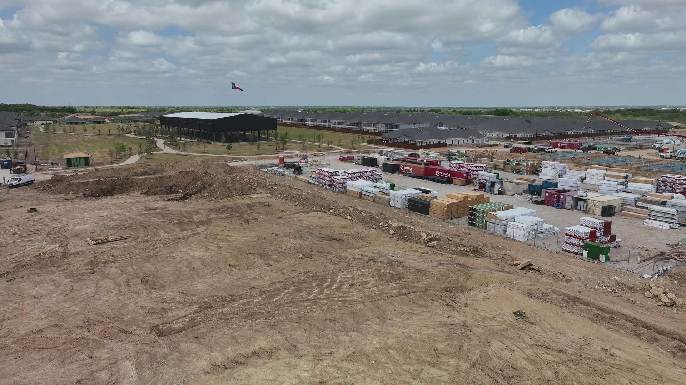

Free site screen for Texas land
What the public record says about a tract, drawn on one sheet.
Drop in a location. The screen finds the appraisal parcel and reads the floodplain, wetlands, streams, soils, public lidar, transmission lines and city limits, then lays it all out on the same sheet format our surveyors deliver. Run it on every site on your list.
Site screen
Site
Screen preview. The full-size sheet comes with the emailed packet. Appraisal parcel lines are not a boundary and can be off by tens of feet; every figure is approximate and from public data. Not for conveyance, design or construction.
The full packet
Get the complete screen in your inbox.
The packet is what you forward to a partner, a lender or your engineer. A surveyor looks it over before it goes out.
- Full-size sheet in the same 24 × 36 layout as our survey deliverables
- Layer-by-layer findings with the agency, dataset and date behind each one
- Record references read from the appraisal description
- Terrain and rough earthwork from public lidar, with 3D model views
- The survey that fits where your site stands, and what a licensed survey still has to answer
- Your short list compared side by side
Packet requested
It's on the way.
- A surveyor checks the screen so the packet reads correctly for this site.
- The packet reaches your inbox, usually within one business day.
- If you asked for a proposal, it comes as a separate written scope and price. Nothing is ordered until you approve it.
The full brief is open on this screen now. Questions in the meantime: (469) 317-0250 or surveytx@txasc.com.
Know the limits
What this screen is, and what it is not
It assembles the first look
The facts most people gather on the first day: the appraisal parcel and its neighbors, FEMA's mapped flood zones, the National Wetlands Inventory, mapped streams, NRCS soils, USGS lidar terrain, public transmission lines, and whether the tract sits inside mapped city limits. Each layer carries its source and date.
The data has been public for years. What cost money was assembling it: a desktop feasibility report, a data seat, or an afternoon of map tabs on a tract you may never buy.
It does not replace licensed or certified work
- A boundary or ALTA/NSPS survey, sealed by a Texas RPLS
- A design topographic survey and quantities
- A wetland delineation or a Phase I ESA
- A geotechnical report
- A city zoning verification letter
- A utility capacity or interconnection study
- A title commitment
Compare
Your short list
Saved in this browser only. Nothing on the list reaches ASC unless you ask for a packet.
Screen a site and choose Add to short list to compare tracts side by side.
When a site is kept
One crew for the boundary and the ground.
Once a tract is under option or contract, the questions this screen can't answer get real: where the boundary actually is, which recorded easements touch it, and what the ground actually does.
ASC is the crew with the drone. The boundary is tied and the site is flown on the same visit, so the boundary or ALTA, the design topography, and later the construction control and progress flights come from one licensed Texas crew.
- 2009Established in Richardson
- 2 RPLSOn staff. Every survey is reviewed by one.
- VeteranOwned and operated